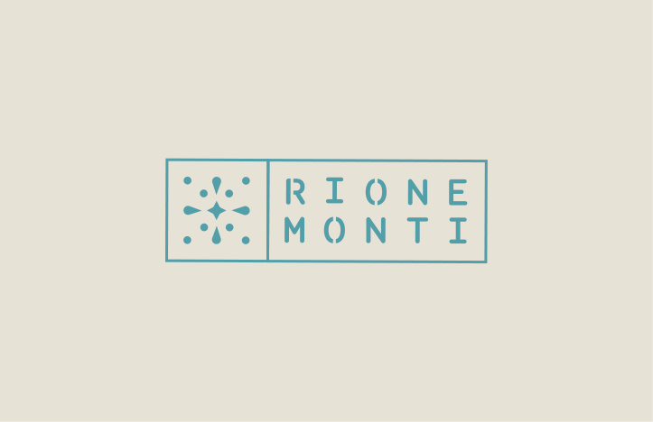

Rione Monte.
BRIEFING
Rione Monte is a Paris-based Italian catering service specializing in authentic Roman cuisine. The brief called for a complete brand identity and digital presence that would convey the warmth of Italian hospitality while appealing to a French audience.
CONCEPT
The visual identity draws from the rich iconography of Roman neighborhoods—the rioni. A warm terracotta palette paired with classical illustrations creates an inviting yet refined aesthetic. The design system extends across menus, social media, and print materials, balancing tradition with contemporary sensibility.


1/1